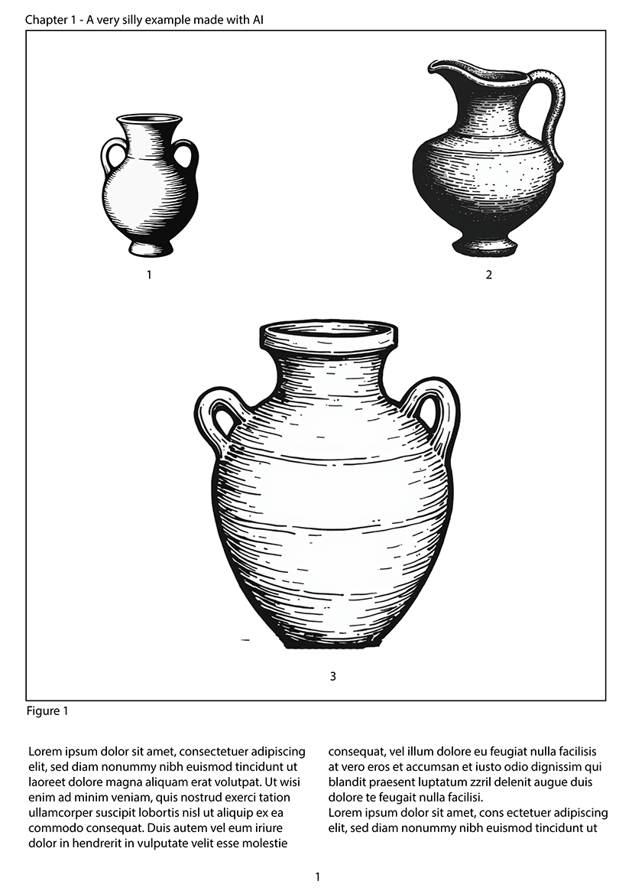
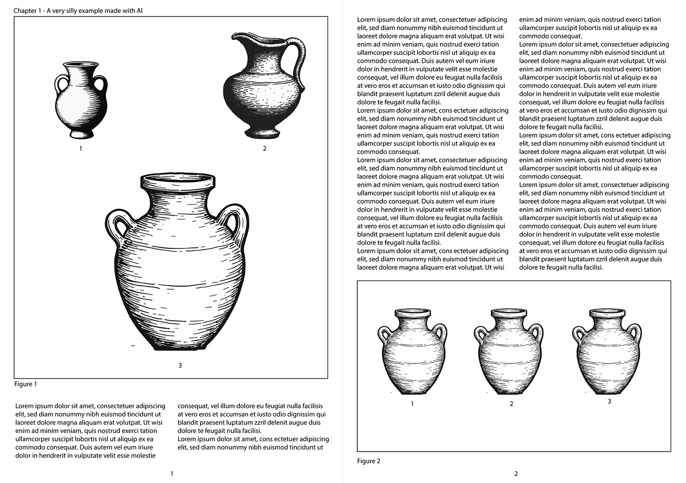

Using PyPotteryLens

PyPotteryLens turns a published monograph (a PDF full of plates with pottery drawings) into a clean dataset: one image per vessel, oriented the same way, with the data you attach to it. This guide follows the app tab by tab, in the order you will use them. Every step builds on the previous one, and everything is saved automatically inside your project, so you can stop at any time and pick up later.
Project Manager → 1. PDF Document Processing → 2. Apply Model → 3. Review Annotations & Masks → 4. Tabular Information → 5. Post Processing → Export ZIP
Key terms
| Term | Meaning |
|---|---|
| Plate (or page) | One page image extracted from the PDF. A plate usually carries several drawings. |
| Mask / polygon | The outline the model draws around a vessel. It is stored as a simple polygon (a dozen or so vertices), so it is easy to edit. |
| Card | The cropped image of a single vessel: the drawing cut out of the plate, with the rest of the plate painted white and a white margin around it. |
| ID | The number of a vessel on its plate (0, 1, 2…). It is what links a card to a row of your table. |
| ENT / FRAG | Classification of a card: entire (a substantially complete profile) or fragment. |
| px/cm | The scale of a plate, in pixels per centimetre, measured from the printed scale bar. |
Project Manager
Every dataset lives in its own project: a self-contained folder with your PDF, images, masks, tables and exports. Create one project per monograph, site or assemblage; you can keep as many as you like and switch between them freely.
Create a project
- In New Project Dossier, type a Project Name (required), for example
Scavi_Capena_2024. - Optionally add a Description (site context, trench, assemblage notes) and pick a Project Icon Stamp to recognize it at a glance.
- Click Create Project.
The project folder is named after your project plus a timestamp (for example Scavi_Capena_2024_20260918_083330), so two projects with the same name never collide. The project name is also used to name the page images, so pick something short and clear.
Open, refresh and delete
Existing projects are listed in the Project Repository. Click a project card to activate it: from that moment every tab works on that project. Use Refresh if you added a project folder from outside the app.
Deleting a project removes everything inside it: the source PDF, extracted images, masks and annotations, and exported data. The app lists what will be deleted and asks you to confirm; it cannot be undone.
1. PDF Document Processing
Upload the PDF of the monograph or report. PyPotteryLens renders every page as a high-resolution image (300 DPI), one JPG per page, ready for the model.
- Select the project first: the PDF is attached to the active project.
- Look at your PDF. Is each PDF page one book page (a normal digital monograph), or is it a scanned spread, with two facing pages side by side on one sheet (a book laid open on a scanner)?
- If it is a spread, switch Split Scanned Spreads ON before choosing the file. Each sheet is cut down the exact middle into a left and a right plate. For a normal PDF leave it OFF.
- Click Select PDF File (or drag the file onto the box) and wait for the processing to finish. The Ingestion Status box then shows the active file.


What you will see. A success message with the number of images extracted. The pages are saved in the project’s images/ folder, named after the project (not the PDF): Scavi_Capena_2024_page_0.jpg, ..._page_1.jpg, and so on. With splitting, each sheet gives two files, ..._page_0a.jpg (left) and ..._page_0b.jpg (right).
The split cuts exactly in the middle of the sheet. If the two pages on your scans are not centred (for example a large margin on one side), a vessel close to the spine can be cut in two. Check a few plates after the upload.
A project can hold only one PDF. To use a different document, click Remove PDF in the Ingestion Status box: this deletes the PDF and its extracted page images, and you must upload a new one. Or simply create another project.
Very large PDFs (hundreds of pages) take a while, because every page is rendered at 300 DPI. If a monograph has a long text section and a short plates section, consider extracting only the plates into a smaller PDF first.
2. Apply Model
The detection model looks at every plate and outlines each pottery drawing. For each detected vessel it saves a polygon, which you will review in the next tab.
Choose the model and the confidence
- Active Vision Model: the YOLO model trained on archaeological pottery profiles. Use the one that is already selected unless you have a custom model in
models_vision/. - Confidence Threshold (0.10 to 1.00, default 0.50): how sure the model must be before it reports a vessel.
How to choose the confidence, by what you see in the results:
| If you see… | Then… |
|---|---|
| Vessels missing (a drawing has no outline) | Lower the threshold (for example 0.30-0.40) |
| Extra outlines on things that are not vessels (page numbers, decorations, stray marks) | Raise the threshold (for example 0.60-0.70) |
| Mostly correct results | Keep 0.50 and fix the few errors by hand in the next tab |
These values are starting points, not rules: the right setting depends on the print quality of your monograph. In general it is easier to delete a wrong outline than to draw a missing one, so if in doubt, lean lower.
Full dataset or a quick test
Under Execution Mode choose:
- Full Dataset: process every image you have selected in the project.
- Diagnostic Test: process only the first 25 images. Use it to try a confidence value in a couple of minutes instead of waiting for the whole book.
Choose which images to process
The Project Figures gallery shows all the extracted pages, and the badge tells you how many are queued (for example “12 to process”). Select All and Deselect All act on the whole gallery; click single pages to include or exclude them. Excluding is useful for the cover, the text pages, indexes and blank sheets: it saves time and avoids false detections.
If you excluded some images, the app shows a short summary (how many will be processed and how many skipped) before starting.
Click Apply Model to Project. A full-screen overlay shows the progress and the file being processed, and Stop Processing cancels the run.
What you will see. When the run ends, the masks are ready in the next tab. Each plate has its polygons saved in the project’s masks/ folder; running the model again on a plate replaces its previous polygons, so do your manual corrections after you are happy with the model run.
A good routine: run a Diagnostic Test, open a few plates in the next tab, adjust the confidence, and repeat. Only when the first 25 plates look right, run the Full Dataset.
3. Review Annotations & Masks
The model is good, not perfect. Here you check every plate, correct the outlines, and finally cut out the individual drawings.
Open a plate by clicking it in the Images List (the sidebar can be collapsed with Images List). Use Prev / Next to move between plates, and the + / − / Fit controls, or the mouse wheel, to zoom and pan. The Vessels & Polygons panel lists every outline on the current plate.
Tools
| Tool | What it does | Key |
|---|---|---|
| Select | Click a vessel to select it and drag it to move it. Drag one of its vertices to move it, click an edge to add a vertex, Alt or Shift + click a vertex to delete it. It never paints |
V |
| Brush | Paint with a round cursor. When you release, the stroke becomes a clean vector polygon | B |
| Polygon | Click to place vertices; click the first point (or double-click, or press Enter) to close. Backspace removes the last vertex, Esc cancels |
P |
| Eraser | Sweep the round cursor over polygon vertices to erase them | E |
| Colorize | Paint each polygon in a different color (on by default) | |
| Clear | Remove all polygons on the current image |
The Size slider sets the diameter of the brush and eraser (5-100 px). The Expansion slider (0-100 px, default 8 px) adds padding around every vessel when the cards are cut, so the drawing is not cropped too tightly: raise it if lines at the edge of a vessel are being cut off, lower it if neighbouring drawings creep into the card.
Select a polygon in the list (or with the Select tool) and press Delete to remove it. Ctrl+Z undoes the last change to the polygons of the plate, whatever the tool that made it (up to 50 steps).
What to look for on each plate. Go through the plates in order and check four things: every vessel has an outline; no outline covers two vessels; no outline covers something that is not a vessel; and the outline does not cut through the drawing (a cut rim or base is the most common problem). Your changes are saved automatically when you move to another plate.
Vessels drawn inside other vessels
Some draughtsmen draw a small vessel inside the section of a larger one. The model was trained on isolated vessels, so it usually finds only the outer silhouette and the inner vessel is missed.
Use Polygon (P) to outline the inner vessel by hand. Each polygon becomes its own card when you extract, so the inner vessel gets its own image and its own row in the table. The inner vessel is also automatically whitened out of the larger card, so it does not appear twice. A polygon counts as “inside” another one when it is smaller and its center falls within the larger one.
Check the outlines with Colorize
Colorize (on by default) paints every polygon in its own color. Use it as a quick check that each vessel has its own outline: if what looks like two vessels is a single blob of one color, one polygon covers both, so redraw them as two. Colors update live after every change.
Calibrate the scale (optional)
If you want real-world sizes in your data, tell PyPotteryLens what the printed scale bar measures:
- Select the Scale tool.
- Click the two ends of the graphic scale bar on the plate.
- Type the length in cm in the small box and confirm (
Enter);Esccancels.
The measure appears in Scale calibrations, and it is used to fill a px_per_cm column when you extract the cards. Each card takes the scale that applies to its position:
- A plate with one scale applies it to every vessel on the plate.
- A plate with several scales (for example, different drawings at different reductions): click Zone on a scale and draw a rectangle around the part of the page it applies to. A vessel takes the scale of the zone that contains its center, and if zones overlap, the smallest zone wins. Vessels outside every zone fall back to the plate’s general (non-zone) scale. Each scale is named Z1, Z2, … and every vessel shows the one it will get, on the canvas and in the Vessels & Polygons list, in the color of its zone (a red ! means that more than one zone contains it, a grey ? that no scale applies); the Scale calibrations list shows how many vessels each zone has.
Once you have measured scales on several plates, Calibrate Scales opens a histogram of all the px/cm ratios in the project. Measurements taken with a few pixels of click imprecision show up as scattered values around the true one. Click an empty spot to add a center line, drag lines to move them, double-click to remove them, then Apply Calibration to snap outlier measurements to the value you chose. Ratios are rounded to one decimal.
Extract the cards
When the outlines on all plates look right, click Extract Cards. A dialog asks you to confirm two things:
- Overwrite warning: cards already extracted in this project are regenerated, so any earlier cards are replaced.
- Clean Artifacts & Numbers (optional): removes the small extras that sit around the drawing inside its outline: detached inventory numbers, section profiles, projection dashes and fragments of neighbouring drawings. The vessel itself is left untouched, including its inner lines, hatching and stippling dots. Turn it on for clean results; turn it off if it removes something you want to keep.
A progress overlay (Extracting Cards from Masks) shows the run, and Stop Processing cancels it.
What you will see. One image per outline, saved in the project’s cards/ folder as {page}_mask_layer_{ID}.png, with everything outside the outline painted white and a white margin around it. Two identical cards are never saved twice (exact duplicates are skipped and reported). The app also writes mask_info.csv, the table that the next tab fills, with one row per card and the px_per_cm column when you calibrated scales.
Extract the cards after you are happy with all the outlines. Extracting again regenerates the cards, and the cards are what the next tabs work on.
4. Tabular Information
Attach archaeological data to each extracted vessel.
The table
The center shows the plate with a bounding box and an ID on each vessel; toggle the boxes with Show boxes, and click a vessel to inspect it. On the right is the table, with one row per vessel. Move between plates with Prev / Next or from the Project Plates list; the counter shows Plate X of Y.
A new project starts with two columns, ID and Notes.
- Add Column: type a name and click Add Column. Columns are persistent across the whole project.
- Edit: click a cell and type. Every edit is saved immediately.
- Fill Column: choose a column, type a value and click Fill Column to set it for every row of the current plate (handy for a value shared by all the vessels on the plate). The app asks for confirmation, because it overwrites the values already in that column, on that plate only.
- Clear Page Data: empties the values on the current plate and keeps the columns and the IDs.
- Mark as Reviewed: flag a plate as done, so you can see your progress in the plate list.
Avoid commas inside cell values (a CSV limitation).
AI-assisted extraction (optional)
Monograph plates print, next to the drawings, a page number, a plate number, a figure number and a catalogue number for each vessel. The AI can read these for you and fill four columns: page, plate, figure and number. It does this by looking at the whole plate, with each vessel marked by a coloured box and a letter, and answering for every box. The letters are used only to match answers to boxes; the values it returns are the ones printed in the publication.
- Click Backend and pick the engine:
- Local (Gemma 4 E2B): runs on your machine, after a one-time download of about 10 GB. It is offered only if your computer is powerful enough: an NVIDIA GPU with at least 8 GB of free video memory, or an Apple Silicon Mac with at least 16 GB of memory, or a high-end CPU (i7/i9, Ryzen 7/9, Xeon, or 8+ physical cores) with at least 16 GB of RAM. Otherwise the interface tells you what is missing instead of attempting a download that would fail.
- OpenRouter API: uses a remote model. Enter your API key and the name of a vision-capable model.
- Optionally open Prompt and describe how numbers appear in this publication (for example, that plate numbers look like “Tav. IV” at the top-left corner). The more specific you are, the better the result.
- Click Extract References for the current plate, or Batch Extract for the whole project. You can limit the batch to some plates with the from / to fields (they use the same numbering as the Plate X of Y counter, starting at 1). An overlay shows the progress and the tokens used, and Stop Processing cancels it.
Add your own columns. Put a column name in [square brackets] inside the prompt and that exact name becomes a column that the AI fills, for example “Extract also [Scale] indicated next to the rim” or “Transcribe the [Ceramic Class]”. This keeps the column name identical on every page, instead of drifting (“Scale”, “scale”, “Scala”…).
Use Crops. Turn it on to read the catalogue number from a cropped, enlarged view of each drawing instead of from the whole plate. It improves accuracy for tiny numbers.
A batch overwrites the values in the AI columns of the plates it processes. If some of them already contain data, the app warns you and asks you to confirm (Overwrite and run). If you have already corrected some plates by hand, exclude them with the from / to range.
Always check the AI output. Try Extract References on one plate, adjust the prompt, and only then run the batch. The AI is told to leave a value empty when it cannot find it, but it can still misread a number, so check the results.
5. Post Processing
The last step standardizes the extracted cards so that all the profiles look the same: same orientation, and a label saying whether each one is complete or a fragment.
What the classifier does
For every card, a small neural network answers three questions: is it ENT or FRAG, is the rim at the top or at the bottom, and does the profile face left or right. Then, according to the options you chose, it corrects the card:
- Auto V-flip on: if the rim is at the bottom, the card is flipped upside-down, so every vessel is drawn with the rim at the top.
- Auto H-flip on: if the profile faces left, the card is mirrored, so every vessel has its profile on the right.
The result is a set of cards in the standard archaeological orientation (profile on the right, rim upwards). The ENT/FRAG label is always assigned, even if you turn both flip options off.
Steps
- Choose the automatic corrections with Auto V-flip and Auto H-flip (both on by default).
- Click Process All Images. A progress overlay shows the run and Stop Processing cancels it.
- Review the grid. All cards are shown at their real relative size (the largest one fills the maximum thumbnail), which makes an oddly small or oddly large card easy to spot. Cards with a blue border are ENT, cards with an orange border are FRAG. Hover over a card to reveal its controls:
- Flip vertical / Flip horizontal: fix an orientation the classifier got wrong.
- ENT / FRAG pill: change the classification.
- Exclude: leave the card out of the export (it is greyed out); click again to include it again.
- Click the image to open a full-screen lightbox.
What you will see. The processed cards are saved in the project’s cards_modified/ folder, together with classifications.csv, which records for each card the type, position and rotation the classifier predicted.
Post-processed cards are saved in grayscale, which suits line drawings. If your drawings use color, keep in mind that the exported images come from this step.
Clicking Process All Images again starts from the extracted cards, so the flips and ENT/FRAG changes you made by hand are recalculated. Finish reviewing the classifier’s work only once, after the last run.
Export
Click Export Results, enter an Export Acronym (letters, numbers and underscores only, for example OSA_2024) and choose Export ZIP. The acronym becomes the prefix of every file, so choose one that identifies the publication or the dataset.
The ZIP contains:
- The cards, renamed
OSA_2024_1.png,OSA_2024_2.png, … in plate order (plate 2 before plate 10, then by vessel ID), leaving out the cards you excluded. If you post-processed, they are the cards fromcards_modified/; otherwise, the plain extracted cards. Each image carries its resolution (300 DPI) in its own metadata. OSA_2024_metadata.csv, one row per exported image. The first column isid(the new file name), thentype(ENT/FRAG), then the other columns in alphabetical order: your own columns (page, plate, figure, number, Notes, and any you added), the classifier’spositionandrotation, andpx_per_cmif you calibrated scales. Every value is written as plain text, so nothing is silently turned into a number or a date.
The metadata is read straight from your table, so you can fix a value in the Tabular Information tab and export again at any time.
A complete example
Suppose you want to catalogue the pottery in a 90-page excavation report, where the plates are the last 30 pages and the book was scanned as facing pages.
- Project Manager: create
Capena_2018with a short description. - 1. PDF: switch Split Scanned Spreads ON, then upload the PDF. Check a few pages: each sheet has become two plates.
- 2. Apply Model: in the gallery, Deselect All, then click only the plate pages. Run a Diagnostic Test, look at the first results in the next tab, adjust the confidence, and repeat until the first plates look right. Then run Full Dataset.
- 3. Review: go through the plates, fixing outlines with the Brush, Eraser and Polygon. Measure the scale bar on a few plates and run Calibrate Scales. Click Extract Cards with Clean Artifacts & Numbers on.
- 4. Tabular: try Extract References on one plate, adjust the prompt, then Batch Extract. Fill the rest by hand (for example the context, with Fill Column), and Mark as Reviewed as you go.
- 5. Post Processing: Process All Images, scan the grid, fix the few wrong flips, Exclude anything that is not a vessel.
- Export: acronym
CAP_2018. You obtainCAP_2018.zip, withCAP_2018_1.png,CAP_2018_2.png, … andCAP_2018_metadata.csv.
Where your files are
projects/
└── YourProject_20260918_083330/
├── project.json # Project metadata and workflow status
├── pdf_source/ # Original PDF
├── images/ # Page images (300 DPI JPG)
├── masks/ # Polygons (and scales) per plate, as JSON
├── cards/ # Extracted vessels
│ ├── mask_info.csv # Your tabular data (+ px_per_cm)
│ └── mask_info_annots.csv # Bounding boxes
├── cards_modified/ # Oriented and classified cards
│ └── classifications.csv # ENT / FRAG, position, rotation
├── exports/ # Exported data
└── models/ # Model files used by the projectCommon mistakes
| Mistake | What happens | What to do |
|---|---|---|
| Uploading a spread with Split Scanned Spreads OFF | Each plate holds two book pages, so plate and page data are ambiguous | Remove the PDF and upload it again with the toggle ON |
| Extracting cards before fixing the outlines | Cards with cut rims or two vessels in one | Fix the outlines, then Extract Cards again (it regenerates them) |
| Running the model again after manual edits | The polygons of that plate are replaced | Run the model first, edit afterwards |
| Running a Batch Extract over corrected plates | Your manual values in the AI columns are overwritten | Limit the batch with the from / to range |
| Re-running Process All Images after manual flips | The flips and ENT/FRAG changes are recalculated | Review the grid only after the final run |
Frequently asked questions
Do I need a GPU? No. Everything works on CPU, just more slowly (mainly the model run and the post-processing). The local AI extraction has stricter requirements (see above), but you can use OpenRouter instead.
Can I stop and come back later? Yes. Everything is saved automatically in the project folder. Open the project from the Project Repository and continue from any tab.
Can I use images that are not from a PDF? The workflow starts from a PDF. To use loose images, make a PDF out of them first.
The classifier got a card wrong. Use the flip buttons and the ENT/FRAG pill on the card in the grid. The exported CSV uses your corrected values.
Something is not working. See the troubleshooting table in Getting Started.